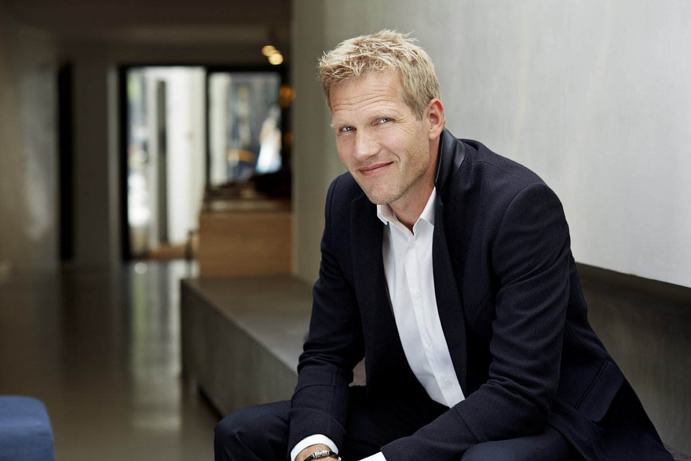
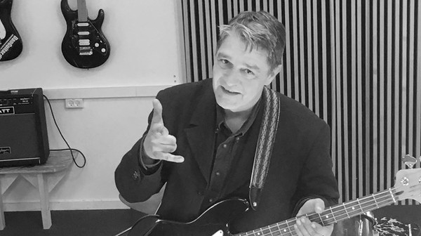

Biography
The beginnings — Michael Learns to Rock (1988–1992)
In 1988, singer Jascha Richter with the intent of forming a band to perform his songs, asked his high school
friend and drummer Kåre Wanscher in Aarhus, Denmark to perform with him. Realizing the limitations of playing as
a duo, they recruited the guitarist Mikkel Lentz, who was then playing rock music with his group the Rocking
Studs. On 15 March 1988, their first night of practice made them realize they needed a fourth musician, so they
asked Søren Madsen, another guitarist who was into Led Zeppelin, to join in on bass guitar.[1] Although Madsen
was not an obvious choice for a pop band, he was invited on the basis that he had been part of the band Hip Hop
that had reached the finals of a Danish competition to nominate a song to the Eurovision Song Contest.
Since Richter already had a number of original songs, eliminating the need to jam, they were able to quickly
record a demo tape intending it to be sent to the 'Rock Grand Prix' competition in their hometown Aarhus, they
had to hurriedly come up with a name before posting it; Richter wrote as the name of the sender 'Michael Learns
to Rock', partly inspired by a line from his school English textbook and partly because they were a pop band
taking part in a rock concert. Lentz and Richter have admitted that the band was named after Michael Jackson: "I
think Richter was thinking of Michael Jackson, because he was called 'the king of pop' and it was kind of funny,
because it was like, what would he sound like if he learned to rock? It was wordplay," Lentz has stated. Richter
claimed in an interview : "Yeah, it was like Johnny Hates Jazz and Frankie Goes to Hollywood. Sure, I've
regretted calling ourselves this many times since, but we were successful so quickly, we had to stick with it
and over time I got used to it."[1]
On 22 May 1988, the quartet played their first public show in Aarhus in 'Rock Grand Prix' at Aarhus's biggest
venue, Ridehuset. As one of the two winning teams, MLTR performed that summer at the Aarhus Outdoor Festival on
20 June, however, only 20 people turned up. The disappointment was offset by a daily newspaper, Information,
describing the unknown group as "an immensely positive surprise". On 30 July 1988, the group entered and won the
city's famed annual talent shows 'We Have The Stage – Do You Have The Music?' at Aarhus Musikhus.[5]
Jens Peter (J.P.) Andersen, a member of the contest jury as well as a promoter of Danmarks Smukkeste Festival
(literally, "Denmark’s Most Beautiful Festival") at Skanderborg, was impressed with the band's talent but was
somewhat annoyed at their lack of professionalism, so he decided to become the band's manager, at the band's
request.[5] Michael Learns to Rock continued playing live throughout Jutland and recording material in order to
attract the attention of Danish record labels. One of these efforts included the band contributing four tracks
for the double album Secrets, a record organised by the Danish Rock Council to create interest in four talented
but 'secret' new bands. They finally signed a record deal with the Danish label Medley in January 1989.[6]
However, the band did not release their first album, Michael Learns to Rock, until September 1991, backed by the
American record label Impact Records and with much of the album including the first American single, "My Blue
Angel", mixed and produced by the American producers Tony Peluso and Steve Barri.[7]
Although not making any headway as intended in America despite airplay for "My Blue Angel", a later single (the
second in Denmark after "I Still Carry On") from the album, "The Actor", topped the Danish chart and also did
well in Norway, Sweden, Indonesia, Malaysia, Singapore and the Philippines.[5] In January 1992, the album topped
the Danish charts, followed soon after by success in Asia, selling 25,000 copies and earning gold status in
Indonesia alone.[6]
Full Songs List
- 25 Minutes
- A Different Song
- A Kiss In The Rain
- African Queen
- Blue Night
- Breaking My Heart
- Breaking The Rules
- Complicated Heart
- Crazy Dream
- Don't Have To Lose
- Everything I Planned
- Final Destination
- Forever And A Day
- Frostbite
- Hit By A Feeling
- Home To You
- How Many Hours
- I Still Carry On
- I'm Gonna Be Around
- I'm Gonna Come Back
- If You Leave My World
- Judgement Day
- Laugh & Cry
- Love Will Never Lie
- Messages
- Nothing To Lose
- Ocean Of Love
- Out Of The Blue
- Paint My Love
- Salvation
- Sleeping Child
- Someday
- Something Right
- Take Me To Your Heart
- Take Off Your Clothes
- That's Why (you Go Away)
- The Actor
- This Is Who I Am
- Wild Women
- You Took My Heart Away

The beginnings — Michael Learns to Rock (1988–1992)
In 1988, singer Jascha Richter with the intent of forming a band to perform his songs, asked his high school
friend and drummer Kåre Wanscher in Aarhus, Denmark to perform with him. Realizing the limitations of
playing as a duo, they recruited the guitarist Mikkel Lentz, who was then playing rock music with his group
the Rocking Studs. On 15 March 1988, their first night of practice made them realize they needed a fourth
musician, so they asked Søren Madsen, another guitarist who was into Led Zeppelin, to join in on bass
guitar.[1] Although Madsen was not an obvious choice for a pop band, he was invited on the basis that he had
been part of the band Hip Hop that had reached the finals of a Danish competition to nominate a song to the
Eurovision Song Contest.

Søren Stig Madsen was the bass player of Michael Learns To Rock, until he decided to leave the
band in the year 2000.

Kåre Wanscher was born on 14th June of 1969 in Aarhus, Denmark. He is a Danish drummer who is
famous for being the band member of Michael Learns To Rock(MLTR). He also works alongside Mikkel Lentz, who
is the guitarist of MLTR.
Kåre Wanscher’s net worth is estimated to be $5 million. He is married to his wife, Katrine Wanscher Kjær
and is living a prosperous life with her.